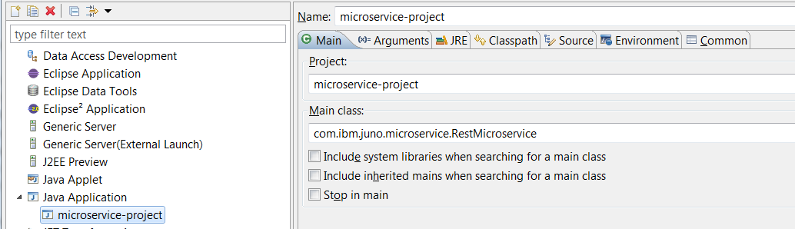
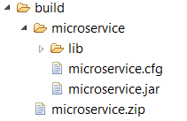

Juneau Cloud Microservice API
Table of Contents
Microservice Introduction
Getting Started
Installing in Eclipse
Running in Eclipse
Building and Running from Command-Line
Manifest File
Manifest API
Config File
Config File API
Resource Classes
RestMicroservice
Extending RestMicroservice
1 - Microservice Introduction
The Juneau Cloud Microservice is an API for creating standalone executable jars that can be used to
start lightweight configurable REST interfaces with all the power of the Juneau REST server and client APIs.
The Microservice API consists of a combination of the Juneau Core, Server, and Client APIs and an embedded
Eclipse Jetty Servlet Container. It includes all libraries needed to execute in a Java 1.6+ environment.
Features include:
- An out-of-the-box zipped Eclipse project to get started quickly.
- Packaged as a simple executable jar and configuration file.
- All the power of the Juneau Cloud Tools for defining REST servlets and clients with the ability to serialize and parse POJOs as HTML, JSON, XML, RDF, URL-Encoding, and others.
- An extensible API that allows you to hook into various lifecycle events.
- Simple-to-use APIs for accessing manifest file entries, command-line arguments, and external configuration file properties.
- Predefined REST resources for configuring microservice and accessing log files.
2 - Getting Started
The microservice-project.zip file is a zipped eclipse project that includes everything you
need to create a REST microservice in an Eclipse workspace.
2.1 - Installing in Eclipse
Follow these instructions to create a new template project in Eclipse.
- Download the latest microservice-project zip file (e.g. microservice-project-5.2.zip).
- In your Eclipse workspace, go to File->Import->General->Existing Projects into Workspace and click Next.

- Select the zip file and click Finish.

- In your workspace, you should now see the following project:

The important elements in this project are:
- META-INF/MANIFEST.MF - The manifest file.
This defines the entry point, classpath, top-level REST resources, and location of external configuration file.
Main-Class: org.apache.juneau.microservice.RestMicroservice
Rest-Resources:
org.apache.juneau.microservice.sample.RootResources
Main-ConfigFile: microservice.cfg
Class-Path:
lib/commons-codec-1.9.jar
lib/commons-io-1.2.jar
lib/commons-logging-1.1.1.jar
lib/httpclient-4.5.jar
lib/httpcore-4.4.1.jar
lib/httpmime-4.5.jar
lib/javax.servlet-api-3.0.jar
lib/jetty-all-8.1.0.jar
lib/juneau-all-5.2.jar
lib/org.apache.commons.fileupload_1.3.1.jar
- RestMicroservice.java - The application class.
This is a specialized microservice in Juneau for exposing REST servlets.
- RootResources.java - The top-level REST resource.
This class routes HTTP requests to child resources:
/**
* Root microservice page.
*/
@RestResource(
path="/",
label="Juneau Microservice Template",
description="Template for creating REST microservices",
properties={
@Property(name=HTMLDOC_links, value="{options:'$R{servletURI}?method=OPTIONS'}")
},
children={
HelloWorldResource.class,
ConfigResource.class,
LogsResource.class
}
)
public class RootResources extends ResourceGroup {
// No actual code!
}
- microservice.cfg - The external configuration file.
A deceivingly simple yet powerful INI-style configuration file:
#================================================================================
# Basic configuration file for SaaS microservices
# Subprojects can use this as a starting point.
#================================================================================
#================================================================================
# REST settings
#================================================================================
[REST]
# The HTTP port number to use.
# Default is Rest-Port setting in manifest file, or 8000.
port = 10000
...
At this point, you're ready to start the microservice from your workspace.
2.2 - Running in Eclipse
The microservice-project.launch file is already provided to allow you to quickly start
your new microservice.
Go to Run->Run Configurations->Java Application->microservice-project and click Run.

In your console view, you should see the following output:

Now open your browser and point to http://localhost:10000.
You should see the following:

You have started a REST interface on port 10000.
2.3 - Building and Running from Command Line
The build.xml file is a very basic ANT script for creating your microservice
as an executable jar.
To build your microservice, right-click on build.xml and select Run As->Ant Build.
Once complete (which should only take about 1 second), if you refresh your project, you should see the following new directory:

If you open up a command prompt in the build/microservice folder, you can start your microservice as follows:

If you get this error message: java.net.BindException: Address already in use, then this microservice is already running elsewhere and so it cannot bind to port 10000.
3 - Manifest File
The META-INF/MANIFEST.MF file is used to describe the microservice.
If you open it, you'll see the following:
Main-Class: org.apache.juneau.microservice.RestMicroservice
Rest-Resources:
org.apache.juneau.microservice.sample.RootResources
Main-ConfigFile: microservice.cfg
Class-Path:
lib/commons-codec-1.9.jar
lib/commons-io-1.2.jar
lib/commons-logging-1.1.1.jar
lib/httpclient-4.5.jar
lib/httpcore-4.4.1.jar
lib/httpmime-4.5.jar
lib/javax.servlet-api-3.0.jar
lib/jetty-all-8.1.0.jar
lib/juneau-all-5.2.jar
lib/org.apache.commons.fileupload_1.3.1.jar
The Main-Class entry is the standard manifest entry describing the entry point for the executable jar.
In most cases, this value will always be org.apache.juneau.microservice.RestMicroservice.
However, it is possible to extend this class or implement your own microservice, in which case you'll need
to modify this value to point to the new class.
The Rest-Resources entry is a comma-delimited list of REST resources.
These are classes that subclass from either {@link org.apache.juneau.microservice.Resource} or {@link org.apache.juneau.microservice.ResourceGroup}.
This is a specialized entry when using org.apache.juneau.microservice.RestMicroservice.
In most cases, you'll want to specify a single top-level "grouping" REST resource mapped to "/" that extends from {@link org.apache.juneau.microservice.ResourceGroup}
so that you can define multiple child resources.
In this case, we're pointing to a resource defined in our project: org.apache.juneau.microservice.sample.RootResources.
The Main-ConfigFile entry points to the location of an external configuration file for our microservice.
The Class-Path entry is the standard manifest file entry.
However, if you need to add extra libraries to your microservice, you'll need to copy them into your lib
directory and add them to the classpath here.
Other manifest file entries are also provided:
- Rest-Port - The HTTP port to use. Default is 10000.
- Rest-ContextPath - The servlet context path. Default is "/".
- Rest-AuthType - Authentication support.
Possible values are "NONE" and "BASIC".
Default is "NONE".
Used with the following additional settings:
- Rest-LoginUser
- Rest-LoginPassword
- Rest-AuthRealm
In addition to these predefined manifest entries, you can add your own particular entries to the manifest file
and access them through the Manifest API described next.
3.1 - Manifest API
The {@link org.apache.juneau.microservice.Microservice#getManifest()} method is a static method that
can be used to retrieve the manifest file as an {@link org.apache.juneau.ObjectMap}.
// Get Main-Class from manifest file.
String mainClass = Microservice.getManifest().getString("Main-Class", "unknown");
// Get Rest-Resources from manifest file.
String[] restResources = Microservice.getManifest().getStringArray("Rest-Resources");
Since this method returns an {@link org.apache.juneau.ObjectMap}, it's possible to retrieve entries as a wide variety
of object types such as java primitives, arrays, collections, maps, or even POJOs serialized as JSON.
4 - Config File
The microservice config file is an external INI-style configuration file that is used to configure
your microservice.
If you open the microservice.cfg file, you'll see several predefined sections and settings.
#================================================================================
# Basic configuration file for SaaS microservices
# Subprojects can use this as a starting point.
#================================================================================
#================================================================================
# REST settings
#================================================================================
[REST]
# The HTTP port number to use.
# Default is Rest-Port setting in manifest file, or 8000.
port = 10000
# A JSON map of servlet paths to servlet classes.
# Example:
# resourceMap = {'/*':'com.ibm.MyServlet'}
# Either resourceMap or resources must be specified.
resourceMap =
# A comma-delimited list of names of classes that extend from Servlet.
# Resource paths are pulled from @RestResource.path() annotation, or
# "/*" if annotation not specified.
# Example:
# resources = com.ibm.MyServlet
# Default is Rest-Resources in manifest file.
# Either resourceMap or resources must be specified.
resources =
# The context root of the Jetty server.
# Default is Rest-ContextPath in manifest file, or "/".
contextPath =
# Authentication: NONE, BASIC.
authType = NONE
# The BASIC auth username.
# Default is Rest-LoginUser in manifest file.
loginUser =
# The BASIC auth password.
# Default is Rest-LoginPassword in manifest file.
loginPassword =
# The BASIC auth realm.
# Default is Rest-AuthRealm in manifest file.
authRealm =
# Stylesheet to use for HTML views.
# The default options are:
# - styles/juneau.css
# - styles/devops.css
# Other stylesheets can be referenced relative to the servlet package or working
# directory.
stylesheet = styles/devops.css
# What to do when the config file is saved.
# Possible values:
# NOTHING - Don't do anything.
# RESTART_SERVER - Restart the Jetty server.
# RESTART_SERVICE - Shutdown and exit with code '3'.
saveConfigAction = RESTART_SERVER
# Enable SSL support.
useSsl = false
#================================================================================
# Bean properties on the org.eclipse.jetty.util.ssl.SslSocketFactory class
#--------------------------------------------------------------------------------
# Ignored if REST/useSsl is false.
#================================================================================
[REST-SslContextFactory]
keyStorePath = client_keystore.jks
keyStorePassword* = {HRAaRQoT}
excludeCipherSuites = TLS_DHE.*, TLS_EDH.*
excludeProtocols = SSLv3
allowRenegotiate = false
#================================================================================
# Logger settings
# See FileHandler Java class for details.
#================================================================================
[Logging]
# The directory where to create the log file.
# Default is "."
logDir = logs
# The name of the log file to create for the main logger.
# The logDir and logFile make up the pattern that's passed to the FileHandler
# constructor.
# If value is not specified, then logging to a file will not be set up.
logFile = microservice.%g.log
# Whether to append to the existing log file or create a new one.
# Default is false.
append =
# The SimpleDateFormat format to use for dates.
# Default is "yyyy.MM.dd hh:mm:ss".
dateFormat =
# The log message format.
# The value can contain any of the following variables:
# {date} - The date, formatted per dateFormat.
# {class} - The class name.
# {method} - The method name.
# {logger} - The logger name.
# {level} - The log level name.
# {msg} - The log message.
# {threadid} - The thread ID.
# {exception} - The localized exception message.
# Default is "[{date} {level}] {msg}%n".
format =
# The maximum log file size.
# Suffixes available for numbers.
# See ConfigFile.getInt(String,int) for details.
# Default is 1M.
limit = 10M
# Max number of log files.
# Default is 1.
count = 5
# Default log levels.
# Keys are logger names.
# Values are serialized Level POJOs.
levels = { org.apache.juneau:'INFO' }
# Only print unique stack traces once and then refer to them by a simple 8 character hash identifier.
# Useful for preventing log files from filling up with duplicate stack traces.
# Default is false.
useStackTraceHashes = true
# The default level for the console logger.
# Default is WARNING.
consoleLevel =
#================================================================================
# System properties
#--------------------------------------------------------------------------------
# These are arbitrary system properties that are set during startup.
#================================================================================
[SystemProperties]
# Configure Jetty for StdErrLog Logging
org.eclipse.jetty.util.log.class = org.eclipse.jetty.util.log.StrErrLog
# Jetty logging level
org.eclipse.jetty.LEVEL = WARN
The predefined config file includes all settings for instructional purposes.
In your microservice, you can remove all lines from your config file that have default values.
Although the config file looks deceptively simple, the config file API is a very powerful feature with many capabilities, including:
- The ability to use variables to reference environment variables, system properties, other config file entries, and a host of other types.
- The ability to store and retrieve POJOs as JSON.
- APIs for updating, modifying, and saving configuration files without losing comments or formatting.
- Extensive listener APIs.
Examples:
#--------------------------
# My section
#--------------------------
[MySection]
# An integer
anInt = 1
# A boolean
aBoolean = true
# An int array
anIntArray = 1,2,3
# A POJO that can be converted from a String
aURL = http://foo
# An encoded password
aPassword* = {HRAaRQoT}
# A POJO that can be converted from JSON
aBean = {foo:'bar',baz:123}
# A system property
locale = $S{java.locale, en_US}
# An environment variable
path = $E{PATH, unknown}
# A manifest file entry
mainClass = $MF{Main-Class}
# Another value in this config file
sameAsAnInt = $C{MySection/anInt}
# A command-line argument in the form "myarg=foo"
myArg = $ARG{myarg}
# The first command-line argument
firstArg = $ARG{0}
# Look for system property, or env var if that doesn't exist, or command-line arg if that doesn't exist.
nested = $S{mySystemProperty,$E{MY_ENV_VAR,$ARG{0}}}
# A POJO with embedded variables
aBean2 = {foo:'$ARG{0}',baz:$C{MySection/anInt}}
// Java code for accessing config entries above.
ConfigFile cf = Microservice.getConfig();
int anInt = cf.getInt("MySection/anInt");
boolean aBoolean = cf.getBoolean("MySection/aBoolean");
int[] anIntArray = cf.getObject(int[].class, "MySection/anIntArray");
URL aURL = cf.getObject(URL.class, "MySection/aURL");
String aPassword = cf.getString("MySection/aPassword");
MyBean aBean = cf.getObject(MyBean.class, "MySection/aBean");
Locale locale = cf.getObject(Locale.class, "MySection/locale");
String path = cf.getString("MySection/path");
String mainClass = cf.getString("MySection/mainClass");
int sameAsAnInt = cf.getInt("MySection/sameAsAnInt");
String myArg = cf.getString("MySection/myArg");
String firstArg = cf.getString("MySection/firstArg");
Additional Information
4.1 - Config File API
There are 3 primary ways of getting access to the config file.
- {@link org.apache.juneau.microservice.Microservice#getConfig()} - A static method that can be used to access
the config file from anywhere in your application.
When using this method, any of the following variables can be resolved:
- $S{key}, $S{key,default} - System properties.
- $E{key}, $E{key,default} - Environment variables.
- $C{key}, $C{key,default} - Config file entries.
- $MF{key}, $MF{key,default} - Manifest file entries.
- $ARG{key}, $ARG{key,default} - Command-line arguments.
Additional user-defined variables can be defined by overriding the {@link org.apache.juneau.microservice.Microservice#createVarResolver()} method.
- {@link org.apache.juneau.server.RestServlet#getConfig()} - An instance method to access it from inside a REST servlet.
The following variables are available in addition to the variables defined above:
- $I{key}, $I{key,default} - Servlet initialization parameters.
#-------------------------------
# Properties for MyHelloResource
#-------------------------------
[MyHelloResource]
greeting = Hello world!
@RestResource(...)
public class MyHelloResource extends Resource {
// Access config file when initializing fields.
private String greeting = getConfig().getString("MyHelloResource/greeting");
// Or access config file in servlet init method.
@Override /* Servlet */
public void init() {
String greeting = getConfig().getString("MyHelloResource/greeting");
}
}
Additional user-defined variables can be defined at this level by overriding the {@link org.apache.juneau.microservice.Resource#createVarResolver()} method.
- {@link org.apache.juneau.server.RestRequest#getConfig()} - An instance method to access it from inside a REST method.
The following variables are available in addition to the variables defined above:
- $L{key}, $L{key,args} - Localized variables pulled from {@link org.apache.juneau.server.RestRequest#getMessage(String, Object...)}.
- $A{key}, $A{key,default} - Request attributes pulled from {@link org.apache.juneau.server.RestRequest#getAttribute(String)}.
- $P{key}, $P{key,default} - Request parameters pulled from {@link org.apache.juneau.server.RestRequest#getParameter(String)}.
- $R{key} - Request variables.
- $R{contextPath} - Value returned by {@link org.apache.juneau.server.RestRequest#getContextPath()}.
- $R{method} - Value returned by {@link org.apache.juneau.server.RestRequest#getMethod()}.
- $R{methodDescription} - Value returned by {@link org.apache.juneau.server.RestRequest#getMethodDescription()}.
- $R{pathInfo} - Value returned by {@link org.apache.juneau.server.RestRequest#getPathInfo()}.
- $R{requestParentURI} - Value returned by {@link org.apache.juneau.server.RestRequest#getRequestParentURI()}.
- $R{requestURI} - Value returned by {@link org.apache.juneau.server.RestRequest#getRequestURI()}.
- $R{servletDescription} - Value returned by {@link org.apache.juneau.server.RestRequest#getServletDescription()}.
- $R{servletLabel} - Value returned by {@link org.apache.juneau.server.RestRequest#getServletLabel()}.
- $R{servletParentURI} - Value returned by {@link org.apache.juneau.server.RestRequest#getServletParentURI()}.
- $R{servletPath} - Value returned by {@link org.apache.juneau.server.RestRequest#getServletPath()}.
- $R{servletURI} - Value returned by {@link org.apache.juneau.server.RestRequest#getServletURI()}.
- $R{trimmedRequestURI} - Value returned by {@link org.apache.juneau.server.RestRequest#getTrimmedRequestURI()}.
- $UE{...} - URL-Encode the specified value by calling {@link org.apache.juneau.server.RestUtils#encode(String)}.
#-----------------------------
# Contents of microservice.cfg
#-----------------------------
[MyHelloResource]
greeting = Hello $A{person}!
localizedGreeting = $L{HelloMessage,$A{person}}
#---------------------------------
# Contents of MyHelloResource.java
#---------------------------------
@RestResource(
path="/hello",
messages="nls/Messages",
...
)
public class MyHelloResource extends Resource {
/** Standard hello message. */
@RestMethod(name="GET", path="/{person}")
public String sayHello(RestRequest req) {
return req.getConfig().getString("MyHelloResource/greeting");
}
/** Hello message in users language. */
@RestMethod(name="GET", path="/localized/{person}")
public String sayLocalizedHello(RestRequest req) {
return req.getConfig().getString("MyHelloResource/localizedGreeting");
}
}
#---------------------------------------
# Contents of nls/Messages_en.properties
#---------------------------------------
MyHelloResource.HelloMessage = Hello {0}!
Additional user-defined variables can be defined at this level by overriding the {@link org.apache.juneau.server.RestServlet#createVarResolver()} method.
That sayLocalizedHello() example might need some explanation since there's a lot going on there.
Here's what happens when an HTTP call is made to GET /hello/localized/Bob:
- The HTTP call matches the /hello path on the MyHelloResource class.
- The HTTP call matches the /localized/{person} path on the sayLocalizedHello() method.
- The request attribute person gets assigned the value "Bob".
- The call to req.getConfig().getString("MyHelloResource/localizedGreeting")
finds the value "$L{HelloMessage,$A{person}}".
- The arguments in the $L{} variable get resolved, resulting in "$L{HelloMessage,Bob}".
- The $L{} variable gets resolved to the message "Hello {0}!" in the localized properties file of the servlet based on the Accept-Language header on the request.
- The arguments get replaced in the message resulting in "Hello Bob!".
- The resulting message "Hello Bob!" is returned as a POJO to be serialized to whatever content type was specified on the Accept header on the request.
This particular example is needlessly complex, but it gives an idea of how variables can be used recursively to produce sophisticated results
5 - Resource Classes
Now let's take a look at the resource classes themselves.
The top-level page:
...is generated by this class...
/**
* Root microservice page.
*/
@RestResource(
path="/",
label="Juneau Microservice Template",
description="Template for creating REST microservices",
properties={
@Property(name=HTMLDOC_links, value="{options:'$R{servletURI}?method=OPTIONS'}")
},
children={
HelloWorldResource.class,
ConfigResource.class,
LogsResource.class
}
)
public class RootResources extends ResourceGroup {
private static final long serialVersionUID = 1L;
}
- The label and description annotations define the titles on the page.
These can be globalized using $L{...} variables, or by defining specially-named properties in the properties
file for the resource.
- In this case, the path annotation defines the context root of your application since it was
not specified in the manifest or config file.
Therefore, this resource is mapped to http://localhost:10000.
- The children annotation make up the list of child resources.
These child resources can be anything that extends from Servlet, although usually
they will be subclasses of {@link org.apache.juneau.microservice.Resource} or other resource groups.
If you click the helloWorld link in your application, you'll get a simple hello world message:

...which is generated by this class...
/**
* Sample REST resource that prints out a simple "Hello world!" message.
*/
@RestResource(
path="/helloWorld",
label="Hello World example",
description="Simplest possible REST resource"
)
public class HelloWorldResource extends Resource {
/** GET request handler */
@RestMethod(name="GET", path="/*")
public String sayHello() {
return "Hello world!";
}
}
The {@link org.apache.juneau.microservice.Resource} and {@link org.apache.juneau.microservice.ResourceGroup} classes
are powerful servlets designed specifically for creating REST APIs using nothing more than serialized and parsed POJOs.
Additional Information
6 - RestMicroservice
The {@link org.apache.juneau.microservice.RestMicroservice} class is the main application entrypoint for REST microservices.
The class hierarchy is:
- {@link org.apache.juneau.microservice.Microservice} - Abstract class that defines simple start/stop methods and access to the manifest file, config file, and arguments.
- {@link org.apache.juneau.microservice.RestMicroservice} - Specialized microservice for starting up REST interfaces using Jetty and specifying REST servlets
through the manifest file or config file.
Refer to the Javadocs for these class for more information.
6.1 - Extending RestMicroservice
This example shows how the {@link org.apache.juneau.microservice.RestMicroservice} class
can be extended to implement lifecycle listener methods or override existing methods.
We'll create a new class com.ibm.SampleCustomRestMicroservice.
First, the manifest file needs to be modified to point to our new microservice:
Main-Class: com.ibm.SampleCustomRestMicroservice
Then we define the following class:
/**
* Sample subclass of a RestMicroservice that provides customized behavior.
* This class must be specified in the Main-Class entry in the manifest file and optionally
* a Main-ConfigFile entry.
*/
public class SampleCustomRestMicroservice extends RestMicroservice {
/**
* Must implement a main method and call start()!
*/
public static void main(String[] args) throws Exception {
new SampleCustomRestMicroservice(args).start();
}
/**
* Must implement a constructor!
*
* @param args Command line arguments.
* @throws Exception
*/
public SampleCustomRestMicroservice(String[] args) throws Exception {
super(args);
}
//--------------------------------------------------------------------------------
// Methods on Microservice that can be overridden and customized.
//--------------------------------------------------------------------------------
@Override /* Microservice */
protected void start() throws Exception {
super.start();
}
@Override /* Microservice */
public void stop() {
super.stop();
}
@Override /* Microservice */
public void kill() {
super.kill();
}
@Override /* Microservice */
public void onStart() {
System.err.println("onStart() called!");
}
@Override /* Microservice */
public void onStop() {
System.err.println("onStop() called!");
}
//--------------------------------------------------------------------------------
// Methods on RestMicroservice that can be overridden and customized.
//--------------------------------------------------------------------------------
@Override /* RestMicroservice */
protected void initLogging() throws Exception {
super.initLogging();
}
@Override /* RestMicroservice */
protected Server createServer() throws Exception {
return super.createServer();
}
@Override /* RestMicroservice */
protected void startServer() throws Exception {
super.startServer();
}
@Override /* RestMicroservice */
protected void onCreateServer() {
System.err.println("onCreateServer() called!");
}
@Override /* RestMicroservice */
protected void onStartServer() {
System.err.println("onStartServer() called!");
}
@Override /* RestMicroservice */
protected void onPostStartServer() {
System.err.println("onPostStartServer() called!");
}
@Override /* RestMicroservice */
protected void onStopServer() {
System.err.println("onStopServer() called!");
}
@Override /* RestMicroservice */
protected void onPostStopServer() {
System.err.println("onPostStopServer() called!");
}
}